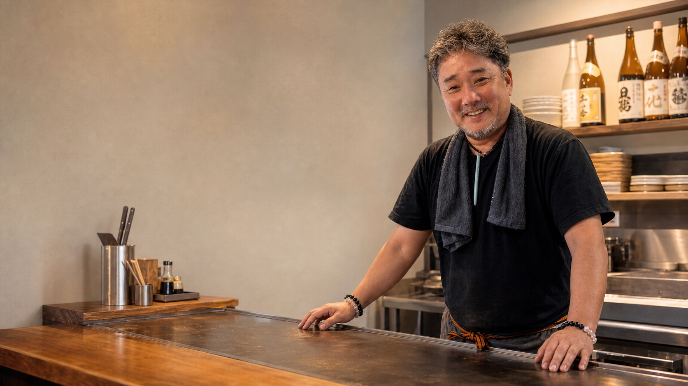
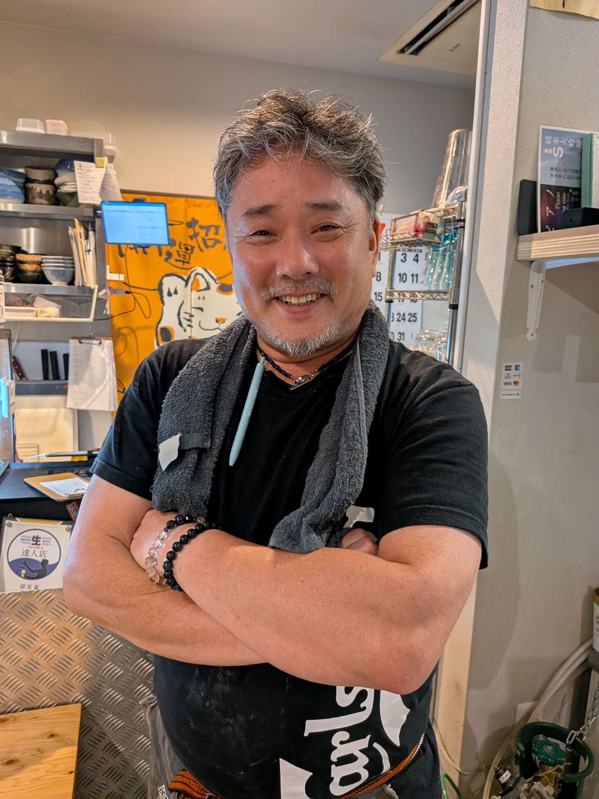
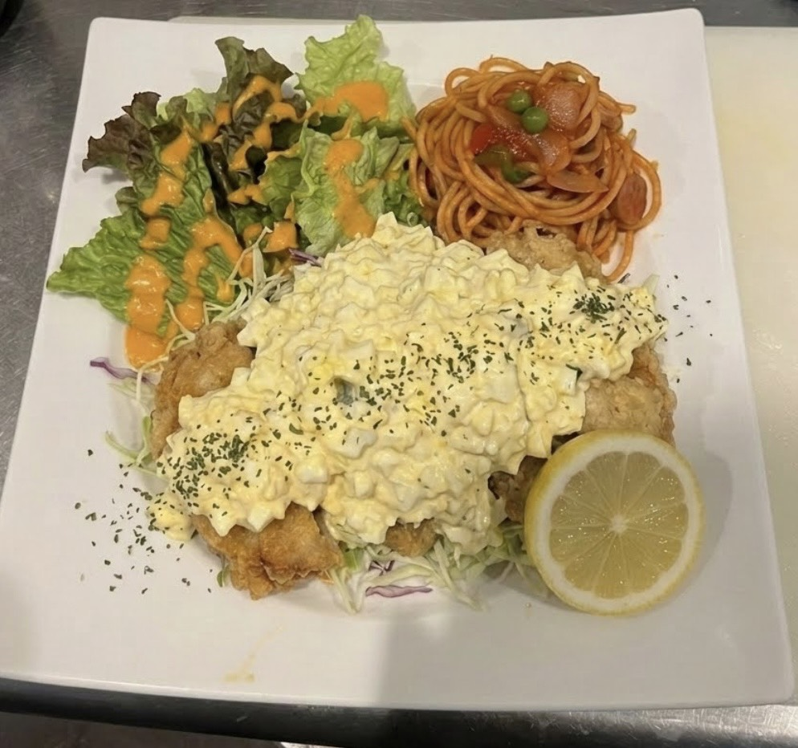
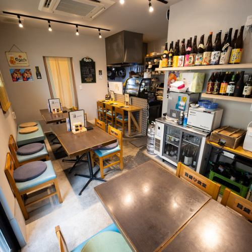
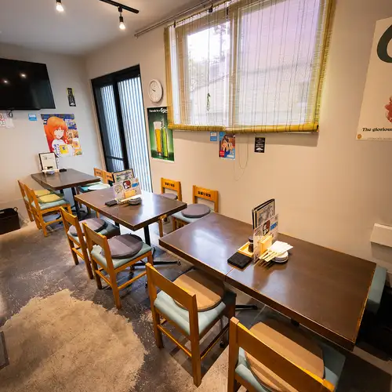

沼ちゃんが迎えます。
初めての一杯も、いつもの一杯も。気取らず過ごせる距離感が、この店らしさです。

京都・西大路の、いつもの一軒。
鉄板の前に、沼ちゃんがいる。
昼はしっかり、夜は気楽に。
西大路駅南口から歩いて約5分の居酒屋です。
初めての一杯も、いつもの一杯も。気取らず過ごせる距離感が、この店らしさです。
鉄板料理に、刺身に、昼の定食。お腹をすかせて来てほしい一軒です。
仕事の合間のランチから、帰り道の一杯まで。西大路の日常に寄り添います。

OWNER / NUMA-CHAN
店の名前を見れば、店主の顔が浮かぶ。そんな小さな居酒屋です。鉄板の前に立つ沼ちゃんのすぐそばで、できたての一皿と一杯をどうぞ。
一人でふらっと、友人とゆっくり。初めての日にも肩の力を抜いて過ごせる、裏西大路の地元酒場です。



カウンターで一人の時間を。テーブルで気の合う人との食事を。初めてでも、いつものように過ごせる小さなお店です。
カウンターで料理を待ちながら、今日の一杯をゆっくり。
仕事の合間にお腹を満たして、午後に戻る。
友人や家族と料理を囲んで、気づけば話が弾む。
はい。カウンター席があり、一人飲みや仕事帰りの利用もしやすいお店です。
大丈夫です。店主との距離が近く、初めてでも落ち着いて過ごしやすい雰囲気です。
はい。ランチ営業日があります。営業時間は来店前に店舗へご確認ください。
15席の小さなお店のため、夜や週末は予約・電話確認がおすすめです。
はい。テーブル席もあり、少人数での食事や飲み利用に向いています。
はい。お弁当や丼のテイクアウトを行っています。ご注文はお電話（075-756-3687）で承ります。メニューは「お弁当・テイクアウト」からご確認ください。
祝日は夜（17:30–23:00）の営業です。祝前日は平日と同じ時間で営業します。来店前に店舗へご確認ください。
現金はもちろん、クレジットカード（VISA・マスター・JCB）とQRコード決済（PayPay）が利用できます。電子マネーは利用不可です。
お店の場所
SEE YOU AT NISHIOJI
京都・西大路でも、
昼ごはんにも、仕事帰りの一杯にも。
お腹をすかせて、ふらっとお越しください。